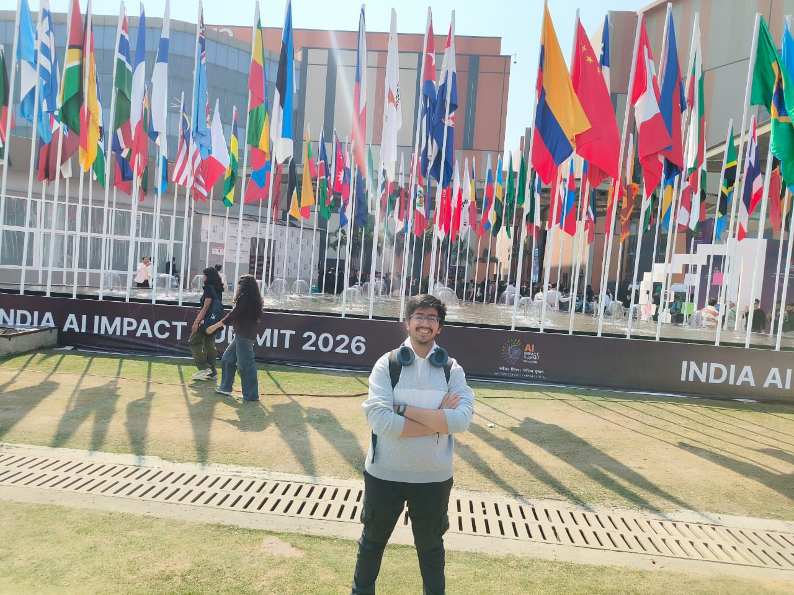
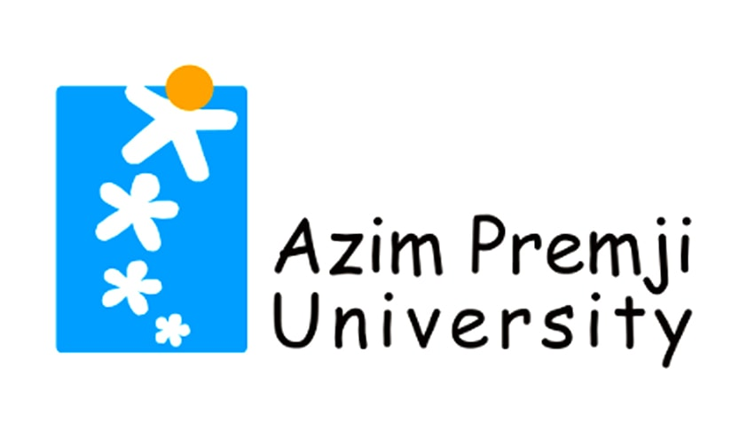

Hello, welcome to my corner of the internet!
Vaibhav Agarwal
Social Data Scientist · Doctoral Researcher
Technical University of Munich · AGAPP–TUS7AGP
I'm a first-year doctoral researcher at the Technical University of Munich studying how algorithmic governance and digitalisation shape public trust. I focus on the heuristics people use when making decisions, leveraging computational methods, conjoint experiments, and multimodal approaches (text, audio, image, and video) to explore complex human behaviors and public policy.
Research
Working papers and publications will appear here as my PhD progresses.
Research Interests
Publications & Conferences
Conference Presentation: Digital Dreams and Practices, March 2025, Digital Humanities in the Nordics and Baltics (DHNB2025). "Applying Self Organizing Maps (SOM) to PERMA-H Framework: Analysing Well-Being Expressions in Suomi24 Online Discussions" with Mahdi Munshi, Viivi Pentikäinen & Krista Lagus.
Journal & Poster: Computing the Impact of Investment in Renewable Energy Projects on Output Growth of Developing Countries, March 2023, Azim Premji University Student Research Conclave. Included a poster presentation on the development of accessible data visualizations.
Projects
A few highlights — academic experiments, data infrastructure, and applied work.
Evaluation of Algorithmic Systems in Public Governance
Examined public perceptions of algorithmic decision-making (ADM) systems to understand trust. Explored standard estimation methods (MM, AMCE, ACP) against latent class analysis in conjoint experiments.
Multimodal Analysis & Data Pipelines
Managed 3 TB of qualitative data using Puhti and Allas servers. Conducted video and auditory analysis using OpenCV and Whisper, and applied Named Entity Correction for political actors across 10 European countries.
Estimating Care Infrastructure in India
Worked as a research assistant to estimate the state of care infrastructure in India through comprehensive web-scraping, data analysis, and the creation of accessible data visualizations.
MGNREGA Social Audits in Telangana
Facilitated social audits across various districts in Telangana. Documented the undertaking of the MGNREGA scheme and actively worked to spread awareness regarding rural workers' rights.
Curriculum Vitae
My academic and professional journey so far.
Doctoral Researcher
First-year PhD researcher at the School of Social Sciences and Technology.
- Researching algorithmic governance, digitalisation, and public policy
- Utilizing conjoint experiments and computational methodology
Master's in Contemporary Societies
Specialised in the Social Data Science Track.
- Master's thesis evaluated algorithmic systems in public governance using conjoint analysis
- Board Member of the International Committee (HYY) advocating for international student rights

Bachelor of Arts in Economics
Completed undergraduate degree with a GPA of 8.1/10.
- Minor in Data, Democracy, and Development Economics
- Presented research on renewable energy project investments at the Student Research Conclave
Research Assistant
Assisted on the AGAPP and HEPP projects focusing on conjoint analysis and multimodal data.
- Managed 3 TB of data using Puhti and Allas servers
- Conducted video/auditory analysis using OpenCV and Whisper
- Set up models for AMCE/MM estimation for conjoint experiments
Teaching Assistant
Teaching Assistant for the Quantitative Research Skills course.
- Supported students with R programming methodology
- Mentored students on factor analysis and regression techniques
Research & Teaching Assistant
Dual roles encompassing data infrastructure research and inclusive pedagogical teaching.
- Estimated care infrastructure in India via web-scraping and data analysis
- Pioneered a 4-day Statistics and R Workshop for visually impaired participants
Social Audit Intern
Worked on grassroots auditing and transparency initiatives.
- Facilitated MGNREGA scheme social audits across multiple villages
- Campaigned to spread awareness regarding worker rights
Beyond Research
"All work and no play..." — here's what keeps me going outside the office.
I have too many interests and too little time, but I wouldn't have it any other way. I cook, I read, I play sports, I travel to eat, and I am always listening to new music. Some of these have been with me since childhood in Bangalore; others I picked up along the way in Helsinki and Munich. All of them keep me sane.
Below are some of my long-standing interests; click to explore each one.


Get in Touch
Whether about research, collaborations, or just a chat over coffee.
Feel free to reach out. I'm happy to hear from people about research, data science collaborations, or just about anything. Book recommendations and travel suggestions are also always welcome.
Munich School of Politics and Public Policy
Munich, Germany